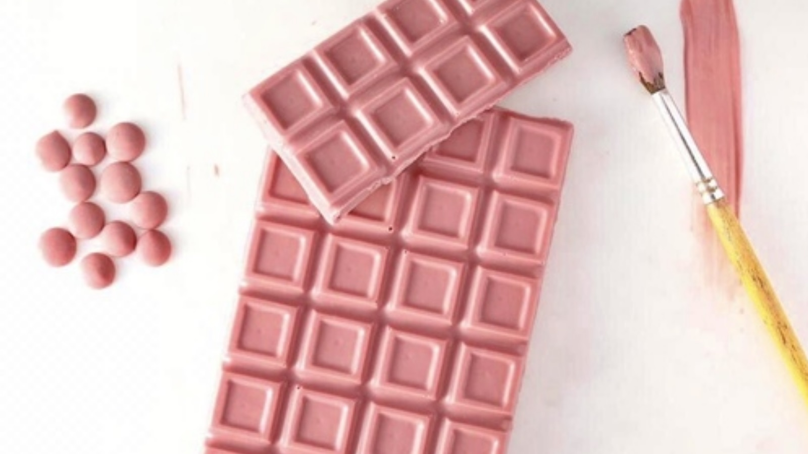

|  |
|
|
| ◄ | ► |
| O chocolate é feito de grãos de cacau rubi. Estas são variedades botânicas existentes de grãos de cacau que foram identificadas como tendo os atributos certos para serem processados em chocolate rubi. O sabor do chocolate é descrito como "doce e azedo", com "pouco ou nenhum" do sabor do cacau tradicionalmente associado a outras variedades de chocolate. |